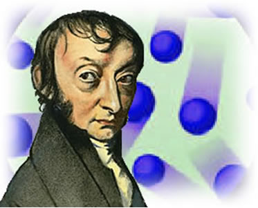

How was this unit discovered?
History
The
mole was discovered by a man by the name of Amadeo Avogadro, an Italian physics professor who proposed in 1811 that equal volumes of different gases at the same temperature contain the same amount of molecules. Fifty years later, another Italian scientist named Stanislao Canizzaro used Amadeo Avogadro's hypothesis to create a set of atomic weights for the known elements by comparing the masses of equal volumes of gases. Building on this work, an Austrian high school teacher named Johann Josef Loschmidt calculated the size of a molecule of air in 1865, and then developed an estimate for the number of molecules in a given volume of air. While these early estimates have since been refined, they led to the concept of the mole - that is, the theory that in a defined mass of an element (its atomic weight) there is a precise number of atoms: Avogadro's number.